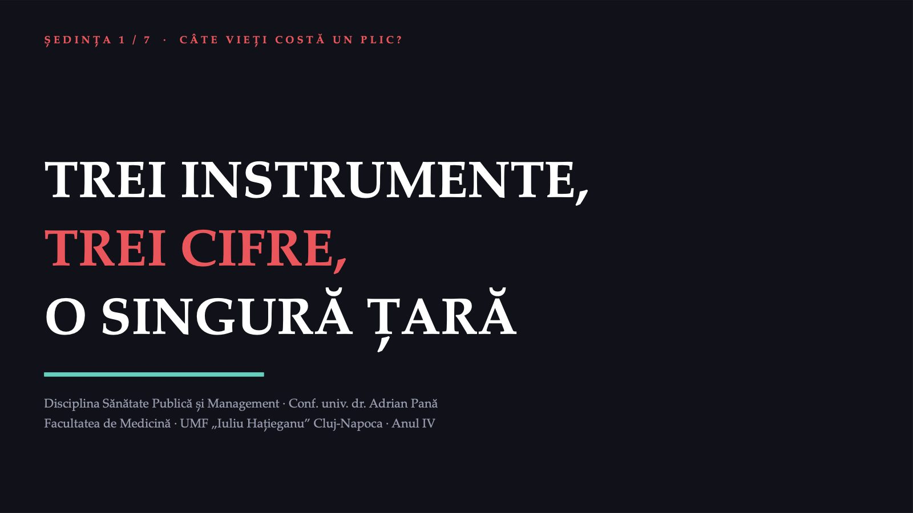
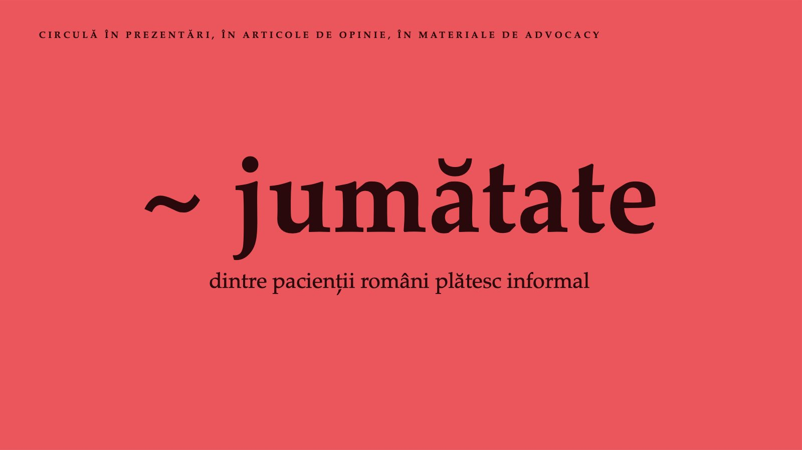
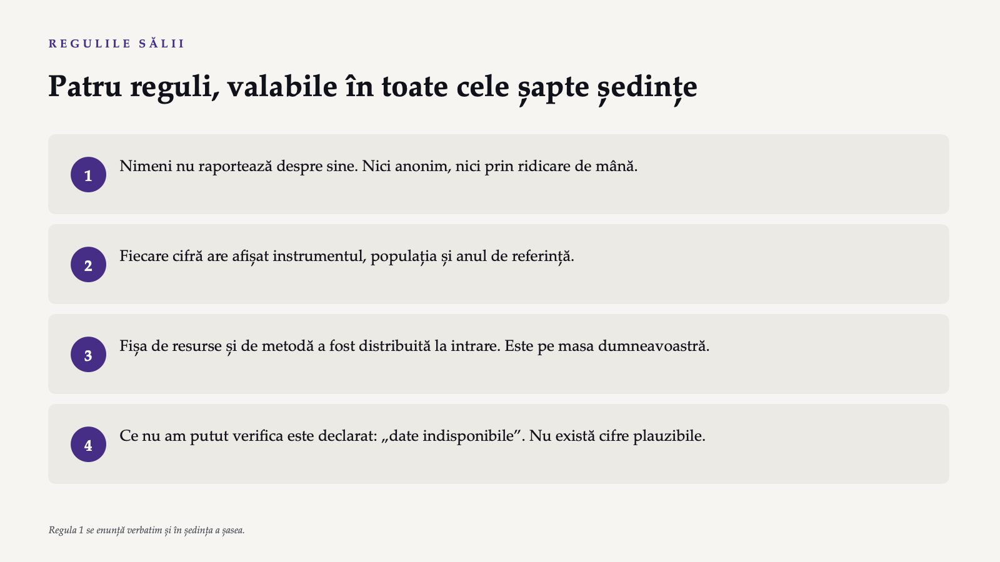
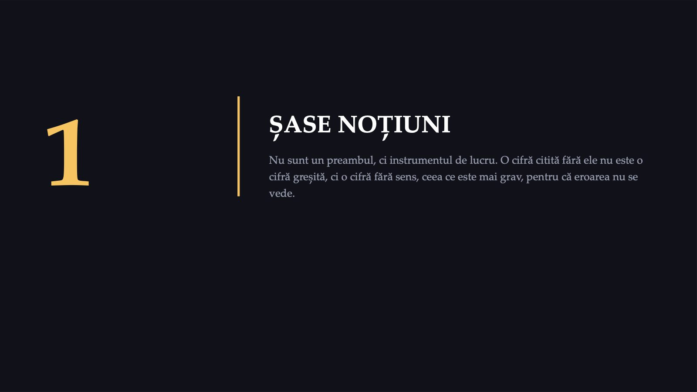
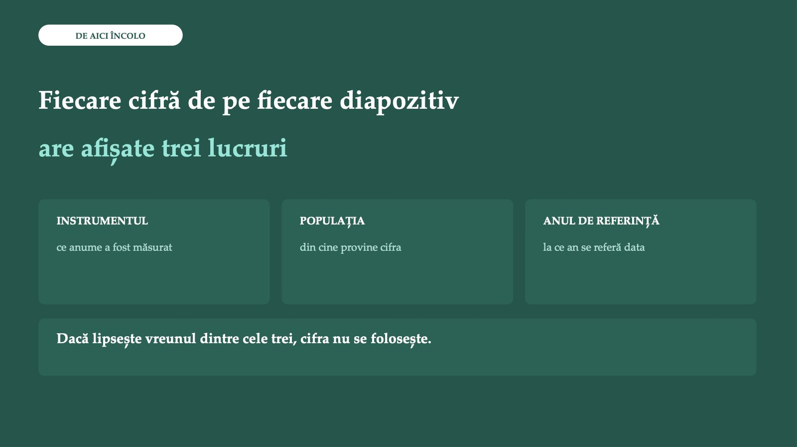
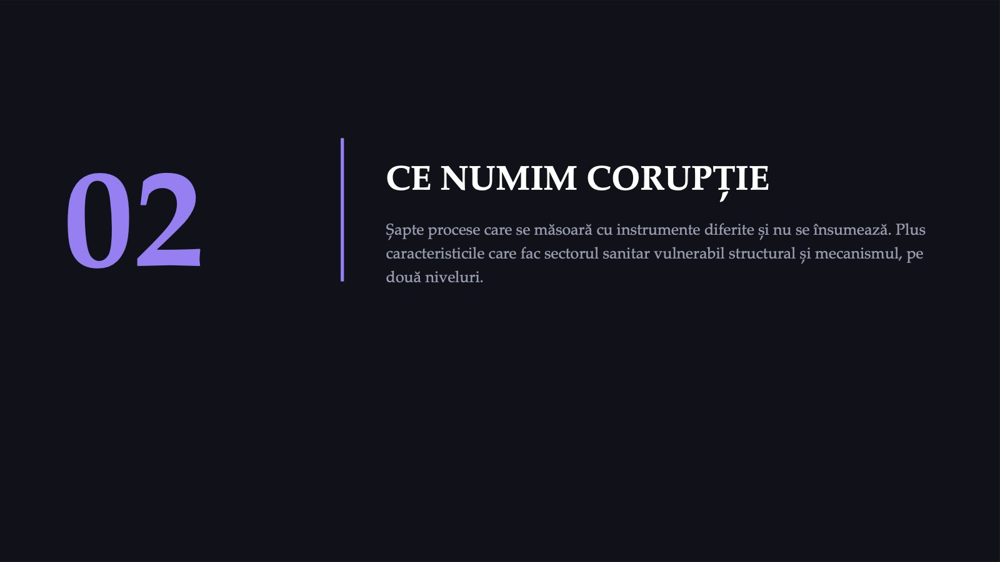
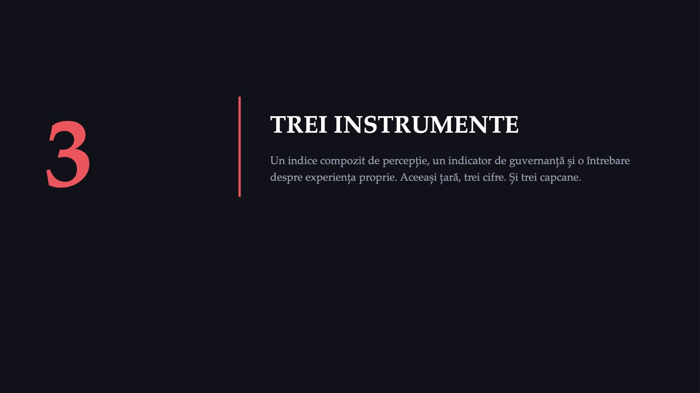
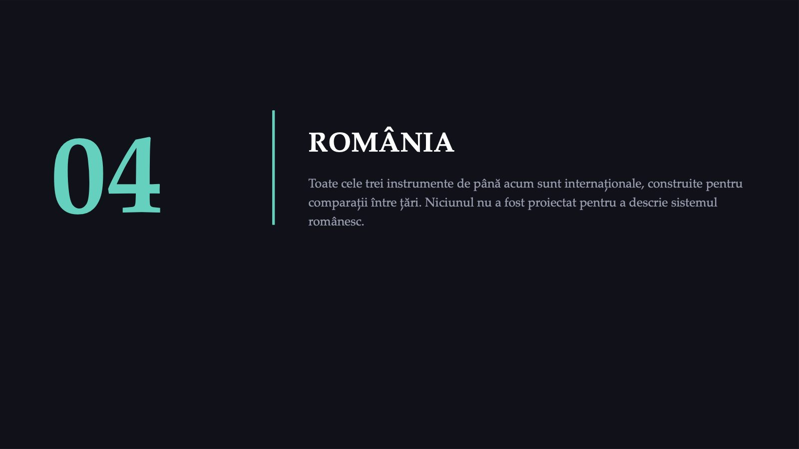
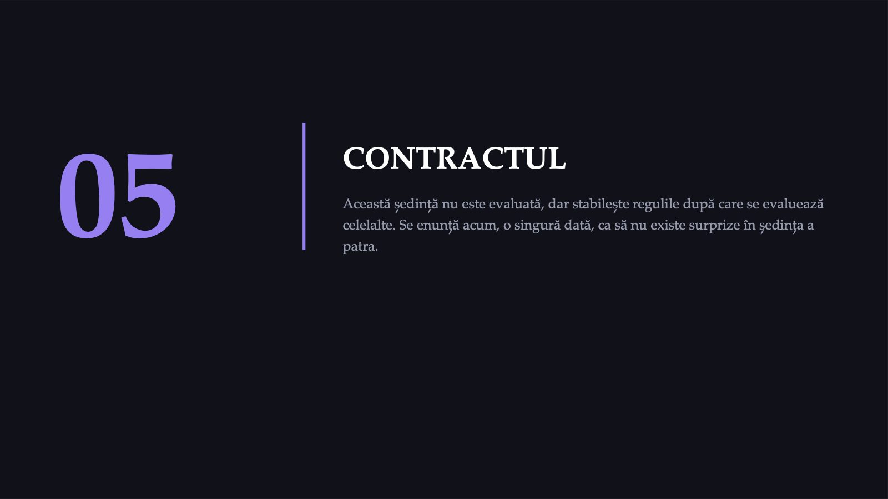
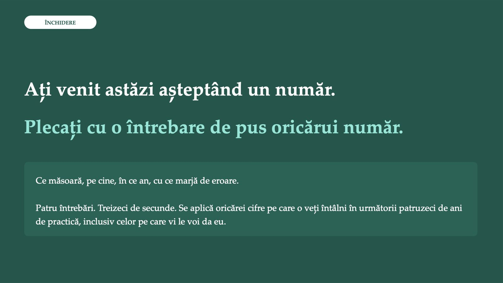

TREI INSTRUMENTE,

1 / 58~ jumătate

2 / 58Trei instrumente măsoară trei lucruri diferite
![DESCHIDERE Trei instrumente măsoară trei lucruri diferite Aceeași țară. Niciuna dintre cele trei cifre nu o contrazice pe celelalte două. INSTRUMENTUL CE MĂSOARĂ AN DE REF. / EDIȚIA VALOAREA Indice de percepție Ce cred experții și oamenii de afaceri despre sectorul public ediția 2025 45 / 100 Sondaj de experiență Ce a declarat pacientul că i s-a întâmplat 2023 se dă după vot Date administrative Solicitări raportate prin canal de feedback 2017–2021 3,2% Cifra de „jumătate”, în această formă, nu apare în niciunul dintre cele trei instrumente. Candidatele ei descriu anii 2008–2013 și nu converg. Transparency International, CPI 2025 · Special Eurobarometer 534 (teren 2023) · Mosca et al., Journal of Medicine and Life, 2023, doi:10.25122/jml-2023-0080](diapozitive/C01/003.jpg) 3 / 58
3 / 58Corupția în sănătate nu este o cantitate.
![TEZA ȘEDINȚEI Corupția în sănătate nu este o cantitate. Este o familie de fenomene, măsurată cu instrumente care nu comunică între ele. CE VĂ PROMIT SĂ ARĂT ÎN URMĂTOARELE DOUĂ ORE PROMISIUNEA UNDE SE ARATĂ Cele trei cifre nu se contrazic Părțile 1a și 1b Un procent fără numitor nu este informație Noțiunea 2, „11% sau 16%?” și Capcana 1 O cifră poate induce în eroare fără să fie falsă Capcana 1, la persoana întâi Nu veți primi numărul din titlu Sinteza, la finalul ședinței Teza se reia, completată, la finalul ședinței.](diapozitive/C01/004.jpg) 4 / 58
4 / 58Patru reguli, valabile în toate cele șapte ședințe

5 / 58Două ore, două părți
 6 / 58
6 / 58Nimeni nu raportează despre sine
![REGULA CARE NU SE NEGOCIAZĂ Nimeni nu raportează despre sine Nicio activitate din acest curs nu vă cere să raportați despre dumneavoastră, despre familia dumneavoastră sau despre locul în care faceți practica. Voturile sunt voturi de opinie și de estimare. Studiile de caz privesc persoane descrise într-o vinietă, nu participanții. DE CE Sunteți în anul al patrulea la medicină, într-un curs despre fapte cu relevanță disciplinară și penală, într-o sală în care vă cunoașteți colegii. Un vot anonim despre ce ați văzut personal ar funcționa, în aceste condiții, ca instrument de autoraportare deghizat. Efectul pedagogic urmărit se obține integral fără el.](diapozitive/C01/007.jpg) 7 / 58
7 / 58Două voturi, anonime
![MINUTUL 12 · SE REIAU IDENTIC ÎN ULTIMA ȘEDINȚĂ Două voturi, anonime VOTUL DE OPINIE „Corupția în sistemul de sănătate românesc este în principal o problemă de caracter individual.” Scala: dezacord total → acord total VOTUL DE ESTIMARE „Ce procent dintre respondenții români cu contact recent cu sistemul public de sănătate au declarat, în cel mai recent val european care a pus această întrebare, că au dat o plată suplimentară sau un cadou?” Distribuția sălii se proiectează imediat DIFERENȚA DINTRE CELE DOUĂ DISTRIBUȚII este singura măsurătoare de impact declarată a acestui curs. În ultima ședință primiți exact aceleași două întrebări, iar cele două distribuții se proiectează una lângă alta. Niciunul dintre cele două voturi nu solicită experiența personală.](diapozitive/C01/008.jpg) 8 / 58
8 / 5801

9 / 58Percepție și experiență
![NOȚIUNEA 1 / 6 Percepție și experiență Ce cred oamenii că se întâmplă, față de ce li s-a întâmplat efectiv. Se măsoară cu întrebări complet diferite și pot da, pentru aceeași țară și în același an, valori care diferă de câteva ori. Nu sunt versiuni mai bune sau mai slabe ale aceleiași măsurători, ci măsurători ale unor lucruri diferite. Percepția este influențată de acoperirea mediatică și de experiența altora, relatată. Experiența declarată depinde de disponibilitatea respondentului de a recunoaște o faptă cu posibilă relevanță penală. CONSECINȚA PRACTICĂ Când vedeți un procent despre corupție, prima întrebare nu este „este mare?”, ci „ce anume a fost întrebat?”.](diapozitive/C01/010.jpg) 10 / 58
10 / 58Numitorul
![NOȚIUNEA 2 / 6 Numitorul Populația în care s-a numărat. Fără ea, procentul nu descrie nimic. Un sondaj poate pune o întrebare NUMAI respondenților care trec de un filtru anterior, de exemplu numai celor care au avut contact cu sistemul public de sănătate în ultimele douăsprezece luni. Când filtrul se aplică, procentul nu mai descrie populația generală. Și, decisiv: dacă proporția celor care trec de filtru se schimbă între două valuri, cele două procente nu mai sunt comparabile direct, chiar dacă întrebarea a rămas identică. CONSECINȚA PRACTICĂ Un procent fără numitor declarat nu poate fi citat. Deloc.](diapozitive/C01/011.jpg) 11 / 58
11 / 58Ruptura de serie
![NOȚIUNEA 3 / 6 Ruptura de serie Momentul în care instrumentul s-a schimbat, iar anii dinainte și de după nu se mai compară. O serie de timp presupune că instrumentul a rămas același. Când metodologia se schimbă (scala, sursele agregate, întrebarea, ancorarea statistică), seria se rupe. Producătorii anunță de obicei ruptura în documentația metodologică, separat de tabelul cu toți anii, care este disponibil imediat. Uneori anunțul lipsește din tabel, iar schimbarea se vede numai din cifre. CONSECINȚA PRACTICĂ Înainte de a compara doi ani, verificați dacă producătorul datelor declară seria comparabilă între acei doi ani.](diapozitive/C01/012.jpg) 12 / 58
12 / 58Anul de referință
![NOȚIUNEA 4 / 6 Anul de referință Anul la care se referă data — nu anul în care a apărut raportul. Diferența este de regulă de unu până la trei ani, dar poate fi mai mare și NU este constantă între țări în aceeași publicație internațională. Într-o comparație europeană cu douăzeci și șapte de rânduri, valorile se pot referi la ani diferiți. În acest caz, tabelul nu mai este o comparație, ci o colecție. CONSECINȚA PRACTICĂ Pe fiecare diapozitiv al acestui curs, anul afișat lângă o cifră este anul de referință. Când diferă de anul publicării, se scriu amândouă.](diapozitive/C01/013.jpg) 13 / 58
13 / 58Indicatorul compozit
![NOȚIUNEA 5 / 6 Indicatorul compozit Un număr care nu măsoară nimic direct: agregă mai multe surse după o regulă publicată. Indicele de percepție discutat astăzi agregă treisprezece surse de evaluare, de la experți și din mediul de afaceri. Un indicator compozit moștenește limitele surselor sale și adaugă una proprie: nu toate sursele acoperă toate țările. Scorul României din ediția 2025 a fost calculat din 9 dintre cele 13 surse. CONSECINȚA PRACTICĂ Un scor compozit nu este o măsurătoare, ci o sinteză numerică a unor opinii calificate.](diapozitive/C01/014.jpg) 14 / 58
14 / 58Eroarea standard
![NOȚIUNEA 6 / 6 Eroarea standard Marja de incertitudine publicată a unei estimări. Face parte din cifră. Dacă intervalele de încredere ale două valori se suprapun larg, diferența dintre ele nu susține o afirmație despre schimbare, fie că este vorba de doi ani ai aceleiași țări, fie de două țări în același an. Exemplu: indicele de percepție, 46 (42,7–49,3) în ediția 2024 și 45 (42,8–47,2) în ediția 2025. Un grafic fără benzi de incertitudine nu arată dacă panta depășește incertitudinea. CONSECINȚA PRACTICĂ O cifră fără marjă de eroare nu poate susține o comparație. Poate susține cel mult o descriere.](diapozitive/C01/015.jpg) 15 / 58
15 / 58Fiecare cifră de pe fiecare diapozitiv

16 / 5802

17 / 58Șapte procese, nu cinci categorii
![TIPOLOGIE Șapte procese, nu cinci categorii Tipologia standard nu clasifică după felul faptei, ci după locul din proces în care ea devine posibilă. ARIA SAU PROCESUL CE SE ÎNTÂMPLĂ ȘEDINȚA Construcția unităților Mită și considerente politice în contractare — Achiziția de echipamente Influențarea specificațiilor; înțelegeri la licitație 2 Distribuția medicamentelor Furt, deturnare, vânzarea a ce trebuia gratuit — Reglementarea calității Mită pentru autorizare; influențarea inspecțiilor 3 Formarea profesioniștilor Mită pentru un loc sau pentru o notă; nepotism — Cercetarea medicală Pseudostudii de marketing; consimțământ superficial 3 Furnizarea serviciilor Absenteism; trimiteri inutile; plăți informale cerute 1, 6 Vian T., Health Policy and Planning, 2008, tabelul 1, doi:10.1093/heapol/czm048 [TI, recitit în septembrie 2026]. Tabelul este atribuit de autoare unui capitol propriu anterior, din 2005.](diapozitive/C01/018.jpg) 18 / 58
18 / 58Cele șapte procese nu se însumează
![ATENȚIE DE METODĂ Cele șapte procese nu se însumează Un instrument care măsoară plățile informale din ultimul rând nu spune nimic despre ce se întâmplă în al doilea. Două procese cu mecanisme diferite, actori diferiți și consecințe diferite pentru pacient nu produc o cantitate comună. CE FACEȚI ÎN PRACTICĂ Când cineva vorbește despre „nivelul corupției în sănătate” ca despre o cantitate unică, prima întrebare este: despre care rând vorbiți? Dacă vorbitorul nu poate răspunde, aceasta este informația.](diapozitive/C01/019.jpg) 19 / 58
19 / 58Trei caracteristici — și încă două
![VULNERABILITATE STRUCTURALĂ Trei caracteristici — și încă două Argumentul nu este că oamenii din sănătate ar fi mai puțin onești. Este despre arhitectura sectorului. INCERTITUDINEA Cine se va îmbolnăvi, când și ce tratament va funcționa: toate acestea sunt incerte dinainte. ASIMETRIA DE INFORMAȚIE Pacientul nu poate evalua ce i se face, nici în momentul în care i se face, nici de multe ori după. ACTORI DISPERSAȚI Furnizori, plătitori, reglementatori, producători, distribuitori — fiecare cu informație parțială. Niciun alt sector nu are această combinație. Aceiași autori adaugă încă două: roluri publice încredințate actorilor privați și volumul mare de bani publici, care face din sector o țintă atractivă. Savedoff WD, Hussmann K. În: Transparency International, Global Corruption Report 2006. Pluto Press, 2006, p. 4–16 [TI].](diapozitive/C01/020.jpg) 20 / 58
20 / 58De ce ajunge cineva să facă asta
![MECANISMUL · NIVELUL ÎNTÂI De ce ajunge cineva să facă asta Dacă toată lumea știe că se întâmplă, de ce nu încetează? Răspunsul nu este moral. 1 PRESIUNEA Financiară sau venită dinspre pacient: un salariu care nu acoperă nevoile, o familie care așteaptă, un pacient care insistă să dea. 2 RAȚIONALIZAREA Atitudinile și normele din jur susțin decizia: „toată lumea face așa”, „nu am cerut, mi s-a dat”, „este un semn de recunoștință”. 3 OPORTUNITATEA Posibilitatea de a o face fără consecințe. Din ce este făcută: pe diapozitivul următor. Vian T., Health Policy and Planning, 2008, figura 2, doi:10.1093/heapol/czm048 [TI, recitit în septembrie 2026]. Cele trei forțe acționează împreună: o intervenție care reduce numai una lucrează asupra unei singure forțe din trei.](diapozitive/C01/021.jpg) 21 / 58
21 / 58Din ce este făcută oportunitatea
![MECANISMUL · NIVELUL AL DOILEA Din ce este făcută oportunitatea Formularea clasică a lui Klitgaard, preluată de Vian pentru sectorul sanitar. + MONOPOLUL Lipsa unei alternative pentru pacient. Dacă statul este singurul furnizor, pacientul poate fi constrâns să plătească pentru a accesa serviciul. + DISCREȚIA Autonomia de decizie a celui care oferă serviciul, fără control adecvat: cine intră pe listă, cine primește patul, cine este programat mâine. − RESPONSABILIZAREA Cineva anume răspunde pentru decizie și pentru rezultat. O atribuție împărțită între mulți riscă să nu mai fie exercitată de nimeni. Oportunitatea crește cu monopolul și cu discreția și scade cu responsabilizarea. Cele trei elemente nu epuizează factorii care o pot limita: o intervenție se judecă după efectul ei măsurat, nu după cât de energic este anunțată. Vian T., Health Policy and Planning, 2008, doi:10.1093/heapol/czm048 [TI, recitit în septembrie 2026], după Klitgaard. Unul dintre puținele teste directe în sănătate: în Bolivia, existența unor alternative la serviciile publice a fost asociată cu plăți informale mai mici (Gray-Molina et al., 2001).](diapozitive/C01/022.jpg) 22 / 58
22 / 58Ce nu explică mecanismul
![LIMITA CADRULUI TEORETIC Ce nu explică mecanismul Modelul explică de ce fenomenul este stabil. Nu explică de ce solicitările raportate au fost, în 2017–2021, de peste două ori mai frecvente în trei regiuni de dezvoltare decât în celelalte cinci, într-o țară cu aceeași lege, același sistem de asigurări și aceeași grilă de salarizare. LECȚIA DE METODĂ Un model care explică totul la nivel general și nimic la nivel local nu este încă un model utilizabil pentru politici publice. Aici începe ședința a doua. Cifra pe care o lăsăm deschisă astăzi este exact această dispersie regională.](diapozitive/C01/023.jpg) 23 / 58
23 / 58Cine ar fi trebuit să vadă ce
![HARTA INSTITUȚIONALĂ Cine ar fi trebuit să vadă ce O cifră despre corupție are sens numai dacă știți cine ar fi trebuit să producă informația și nu a produs-o. INSTITUȚIA CE FACE, RELEVANT PENTRU ACEST CURS ȘEDINȚA Ministerul Sănătății Politica sanitară; componența comisiilor de specialitate 3, 7 CNAS Contractarea și decontarea serviciilor; datele de consum 2, 7 DSP județene Control în teritoriu; sesizări la nivel județean 2 INSP Producerea indicatorilor de sănătate a populației 1, 4 ANMDMR Autorizare, farmacovigilență, trasabilitate 3, 7 ANI Averi, interese, incompatibilități; canal extern (Legea nr. 361/2022) 3, 4, 5, 7 DNA Urmărirea penală a faptelor de corupție de competența sa 2, 4, 7 Lista completă, inclusiv Consiliul Concurenței, este în notele de curs, secțiunea 1.8.](diapozitive/C01/024.jpg) 24 / 58
24 / 58ANI nu este organ de urmărire penală
![O DISTINCȚIE CU CONSECINȚE PERSONALE ANI nu este organ de urmărire penală CE FACE ANI Evaluează declarațiile de avere și de interese, modificările patrimoniale, incompatibilitățile și conflictele de interese. Este canal extern de raportare pentru avertizori, potrivit Legii nr. 361/2022. CE NU FACE ANI Nu efectuează urmărire penală și nu trimite în judecată. Când constată elemente care țin de competența altor autorități, transmite cazul organelor fiscale sau de urmărire penală. CONSECINȚA PERSONALĂ O sesizare adresată instituției nepotrivite nu produce consecința urmărită și consumă timp. Alegerea instituției se exersează în ultima ședință, printr-o simulare de raportare.](diapozitive/C01/025.jpg) 25 / 58
25 / 5803

26 / 5813
![INSTRUMENTUL 1 · INDICE DE PERCEPȚIE Corruption Perceptions Index Produs anual de Transparency International. Scor de la 0 la 100, în care 0 marchează cel mai ridicat nivel de corupție percepută. 13 surse de evaluare de tip expert și mediu de afaceri, agregate într-un singur număr 182 țări și teritorii acoperite în ediția 2025, publicată la 10 februarie 2026 2012 anul de la care seria este comparabilă, potrivit producătorului CE DECLARĂ PRODUCĂTORUL CĂ NU ACOPERĂ În întrebările frecvente ale ediției 2025, organizația enumeră explicit, printre aspectele pe care indicele nu le surprinde, percepțiile sau experiența cetățenilor privind corupția. Indicele nu este, așadar, o măsură a experienței pacienților. Transparency International, CPI 2025: metodologia scurtă și întrebările frecvente [TI]](diapozitive/C01/027.jpg) 27 / 58
27 / 58Paisprezece ediții, un punct diferență
![ROMÂNIA · SERIA COMPARABILĂ · SCOR CPI · 8 DIN CELE 14 EDIȚII Paisprezece ediții, un punct diferență 2012 · 44 44 2014 · 43 43 2016 · 48 48 2018 · 47 47 2020 · 44 44 2022 · 46 46 2024 · 46 46 2025 · 45 45 Variația netă 2012 → 2025: un punct. Liniile albe arată intervalele de 90%, care se suprapun (38–50 și 42,8–47,2). Nu susține nicio afirmație despre tendință. Transparency International, CPI, seria comparabilă 2012–2025; anii sunt edițiile indicelui. Ediția 2025, publicată la 10 februarie 2026: România 45/100, locul 70 din 182 [TI].](diapozitive/C01/028.jpg) 28 / 58
28 / 58„Percepția corupției în România s-a îmbunătățit puternic față de primele ediții ale indicelui”
![CAPCANA 2 / 4 „Percepția corupției în România s-a îmbunătățit puternic față de primele ediții ale indicelui” CE SE AFIRMĂ Se proiectează un grafic care pune pe aceeași axă scorurile dinainte de 2012, de la 0 la 10, înmulțite cu zece (de exemplu, 3,0 în ediția 2005), și scorurile din 2012 încoace, de la 0 la 100 (45 în ediția 2025). CE SPUNE SURSA Transparency International precizează, în documentația metodologică, că, din cauza schimbării metodologiei, numai rezultatele DIN 2012 ÎNCOACE pot fi comparate. Rescalarea folosește ca ancoră media și abaterea standard ale ediției 2012. Un grafic care trece peste 2012 pune pe aceeași axă valori produse cu două instrumente diferite; înmulțirea cu zece schimbă unitatea, nu și metoda. REGULA TRANSFERABILĂ Înainte de a compara doi ani dintr-o serie, citiți nota metodologică a producătorului și verificați dacă el însuși declară seria comparabilă între acei doi ani. Verificarea durează câteva zeci de secunde. Transparency International, CPI 2025 — întrebările frecvente, comparabilitatea în timp [TI]; Lambsdorff, CPI 2005, în Global Corruption Report 2006 [TI]](diapozitive/C01/029.jpg) 29 / 58
29 / 58Două state membre au scor mai mic
![ROMÂNIA ÎN UE · EDIȚIA 2025 Două state membre au scor mai mic Media a 31 de țări* 64 ROMÂNIA 45 Bulgaria 40 Ungaria 40 * Media regională publicată de Transparency International, 64 de puncte, acoperă 31 de țări din Europa de Vest și din UE, nu cele 27 de state membre. În ediția 2024: România 46, Malta 46, Bulgaria 43, Ungaria 41. Scoruri: Transparency International, CPI 2025 [TI]. Ordonarea în interiorul UE este un calcul propriu din tabelul de scoruri; Transparency International publică rangul mondial, nu un clasament al UE.](diapozitive/C01/030.jpg) 30 / 58
30 / 58Control of Corruption, Banca Mondială
![INSTRUMENTUL 2 · GUVERNANȚA Control of Corruption, Banca Mondială Estimare față de media mondială a anului (tipic între −2,5 și 2,5), cu eroarea standard, și scor pe o scală absolută de la 0 la 100. ANUL ESTIMAREA SCORUL (0–100) EROAREA STANDARD A ESTIMĂRII 2004 −0,326 41,5 0,178 2014 −0,236 43,3 0,152 2024 −0,001 48,0 0,151 2025 −0,003 48,0 0,151 Banca Mondială, Worldwide Governance Indicators, ediția din septembrie 2026 (1996–2025), controlul corupției; aceleași valori în Data360 (WB_WGI, GOV_WGI_CC, ROU). Setul nu conține rang percentilă [TI].](diapozitive/C01/031.jpg) 31 / 58
31 / 58Intervalul include zero
![CUM SE CITEȘTE RÂNDUL 2025 Intervalul include zero Estimarea este −0,003, cu eroarea standard 0,151. Marja de 90%: 0,151 × 1,64 ≈ 0,25. Intervalul publicat se întinde între −0,251 și 0,246, deci include media mondială a anului. Față de 2024: estimările din ani diferiți nu se compară direct, fiecare fiind raportată la media mondială a propriului an. Pe scorul 0–100, folosit pentru comparațiile în timp, valoarea a fost 48,0 în ambii ani. Nicio schimbare de interpretat. Banca Mondială publică limitele exacte ale intervalului, calculate cu valorile nerotunjite. Calculul de mână, 0,151 × 1,64, dă aceeași marjă, rotunjită.](diapozitive/C01/032.jpg) 32 / 58
32 / 58Singurul dintre cele trei instrumente care întreabă ce s-a întâmplat
![INSTRUMENTUL 3 · EXPERIENȚA PROPRIE Singurul dintre cele trei instrumente care întreabă ce s-a întâmplat 1 FILTRUL Ați fost, în ultimele douăsprezece luni, la un profesionist din sistemul public de sănătate, de exemplu la medicul de familie, sau într-o instituție publică de sănătate, de exemplu într-un spital public? 2 ÎNTREBAREA DE EXPERIENȚĂ — pusă NUMAI celor filtrați În afara taxelor oficiale, a trebuit să dați bani în plus sau un cadou de valoare unei asistente sau unui medic ori să faceți o donație spitalului? Rețineți structura: numitorul întrebării 2 NU este populația generală, ci subgrupul care a trecut de filtrul 1. Aici se află capcanele din diapozitivele următoare. Eurobarometrele speciale 397, 470, 502, 523 și 534: aceeași formulare a întrebării de experiență în versiunea engleză, 2013–2023; versiunea română nu a fost verificată [TI]](diapozitive/C01/033.jpg) 33 / 58
33 / 58Două valuri, două perechi de cifre
![EXPERIENȚA PROPRIE · ROMÂNIA ȘI UE-27 Două valuri, două perechi de cifre VALUL TEREN ÎN ROMÂNIA ROMÂNIA MEDIA UE-27 Special EB 523 22 mar. – 15 apr. 2022 18% 4% Special EB 534 16 apr. – 5 mai 2023 9% 3% VALUL 2022 26 509 interviuri în UE; în România, 1 038, față în față. Valoarea României, cea mai mare din Uniune. VALUL 2023 26 404 interviuri în UE; în România, 1 053, față în față. România, a doua după Grecia (14%). Comisia Europeană, Special Eurobarometer 523 (2022) și 534 (2023): rapoartele și tabelele Volumului A [TI]](diapozitive/C01/034.jpg) 34 / 58
34 / 58Același item, cinci valuri
![EXPERIENȚA PROPRIE · ROMÂNI CU CONTACT CU SISTEMUL PUBLIC DE SĂNĂTATE · 2013–2023 Același item, cinci valuri 2013 · 28% 28% 2017 · 19% 19% 2019 · 19% 19% 2022 · 18% 18% 2023 · 9% 9% Procent din respondenții care au fost, în ultimele 12 luni, la un profesionist sau într-o instituție din sistemul public de sănătate. Prima în UE în 2013, 2017, 2019 și 2022; a doua în 2023. Tabelele publicate nu dau intervale de încredere pe țară. Eurobarometrele speciale 397, 470, 502, 523 și 534, Volumul A. Media UE, în componența de atunci: 5% (2013, fără Croația), 4% (2017) și 5% (2019), cu Regatul Unit, 4% (2022) și 3% (2023) [TI]](diapozitive/C01/035.jpg) 35 / 58
35 / 589%
![ACELAȘI AN, ACEEAȘI ȚARĂ, DOUĂ ÎNTREBĂRI 9% față de 53% Anul 2023. Ambele sunt corecte. Măsoară lucruri diferite, pe numitori diferiți. 9% EXPERIENȚA PROPRIE au declarat că li s-a întâmplat, dintre cei cu contact recent cu sistemul public 53% PERCEPȚIE cred că darea și luarea de mită și abuzul de putere în beneficiu personal sunt răspândite în sistemul de sănătate Raportul este de aproape șase la unu. Media UE-27 la itemul de percepție: 29%. În 2023, sănătatea a fost domeniul cel mai des indicat în România. Special Eurobarometer 534, itemii QA2 și QA7 [TI]. Percepția în România: 50% (2022), 53% (2023), 45% (2024), 44% (2025), 40% (2026).](diapozitive/C01/036.jpg) 36 / 58
36 / 5811%
![ACEEAȘI ÎNTREBARE, ALT NUMITOR · SISTEMUL DE SĂNĂTATE · ROMÂNIA 11% sau 16%? Anul 2023. Aceeași întrebare: vi s-a cerut sau s-a așteptat de la dumneavoastră un cadou, o favoare sau bani? 11% VALOAREA PUBLICATĂ din toți cei care avuseseră contact cu oricare dintre instituțiile enumerate 16% PE NUMITORUL NOU numai din cei cu contact cu sistemul de sănătate (recalcul propriu) Din 2025, tabelele calculează procentul numai din cei cu contact cu instituția respectivă. Valoarea din 2026, 7% (media UE 3%), nu se compară direct cu 11%. Special Eurobarometer 534 (QA9a–QA9b), 561 (QD9b) și 573 (QC6b), Volumul A [TI]; recalculul pentru 2023 este propriu.](diapozitive/C01/037.jpg) 37 / 58
37 / 58„Plățile informale s-au înjumătățit într-un an”
![CAPCANA 3 / 4 „Plățile informale s-au înjumătățit într-un an” CE SE AFIRMĂ 18% în 2022, 9% în 2023, deci fenomenul s-ar fi redus la jumătate într-un singur an. CE SPUNE SURSA Filtrul a fost același în ambii ani, 47%, iar interviurile din România au fost față în față în ambele valuri: explicațiile tehnice obișnuite nu se aplică. Un item înrudit a crescut în aceleași valuri, de la 6% la 11%. Între 2017 și 2022, valoarea a fost practic stabilă (19%, 19%, 18%); față de 2013 (28%), seria mai scăzuse o dată, cu aproape aceeași mărime; după 2023, itemul nu a mai fost măsurat. REGULA TRANSFERABILĂ O variație între două valuri ale unui singur item nu stabilește o tendință. Verificați numitorul, modul de colectare, itemii înrudiți și punctele seriei de dinainte și de după. Eurobarometrele speciale 397, 470, 502, 523 și 534, Volumul A: itemul de experiență, filtrul și itemul înrudit (QA9b) [TI]](diapozitive/C01/038.jpg) 38 / 58
38 / 58„România conduce Uniunea Europeană la corupția din sănătate”
![CAPCANA 4 / 4 „România conduce Uniunea Europeană la corupția din sănătate” CE SE AFIRMĂ Propoziția circulă în această formă generală, fără indicarea instrumentului și fără an. CE SPUNE SURSA Depinde de instrument și de an. PERCEPȚIE: România între locul 5 și locul 7 din 27 (40–53%, 2022–2026); Grecia, prima în fiecare val (88–91%). EXPERIENȚĂ: prima în UE în 2013, 2017, 2019 și 2022; a doua în 2023. CERERE SAU AȘTEPTARE: prima în 2023; în 2026, șapte state membre peste România. REGULA TRANSFERABILĂ O afirmație comparativă fără numele instrumentului și fără an nu poate fi verificată și, prin urmare, nu este o afirmație factuală. Cereți instrumentul și anul înainte de a discuta cifra. Eurobarometrele speciale 397–573 (2013–2026), Volumul A; ordonări proprii [TI]](diapozitive/C01/039.jpg) 39 / 58
39 / 58De ce cele trei nu se pot media
![O TENTAȚIE UȘOR DE ÎNȚELES De ce cele trei nu se pot media UNITĂȚILE DIFERĂ Un scor de la 0 la 100, o estimare față de media mondială și un procent dintr-o populație filtrată nu sunt trei exprimări ale aceleiași mărimi. Normalizarea nu le face comparabile: face doar diferența invizibilă. POPULAȚIILE DIFERĂ Experți și oameni de afaceri; o agregare de surse eterogene la nivel de țară; pacienți cu contact recent. Nu există o populație despre care toate trei să afirme ceva. ANII DE REFERINȚĂ DIFERĂ În exemplul de astăzi: ediția 2025 a indicelui (surse din ultimii doi ani), anul 2025, anul 2023 și perioada 2017–2021. O medie a acestor referințe temporale nu descrie niciun moment real. Când vedeți un „indice compozit de integritate a sistemului de sănătate”, cereți documentul de metodologie.](diapozitive/C01/040.jpg) 40 / 58
40 / 5804

41 / 58254
![O SERIE MULTIANUALĂ A SISTEMULUI ROMÂNESC 254 de spitale publice, cinci ani Date administrative din mecanismul de feedback al pacientului, colectate prin mesaje scurte după externare. 254 spitale publice, aproximativ 72% din rețeaua inclusă în sistem 2017–21 perioada acoperită: ianuarie 2017 – decembrie 2021 197 219 respondenți în 2021, față de 94 025 în 2017 DESIGNUL, EXACT Serie de timp pe date administrative. NU este un eșantion aleatoriu de pacienți: răspund cei care aleg să răspundă unui mesaj. Măsoară raportarea unei SOLICITĂRI, nu prevalența plății. Mosca I, Radu C, Strilciuc Ș, Ungureanu MI. Journal of Medicine and Life, 2023. doi:10.25122/jml-2023-0080 [TI, text integral PMC]](diapozitive/C01/042.jpg) 42 / 58
42 / 58Cifrele principale, cu intervalele lor
![ROMÂNIA · MEDIA PE CINCI ANI · 2017–2021 Cifrele principale, cu intervalele lor ÎNTREBAREA MEDIA 5 ANI INTERVAL DE ÎNCREDERE 95% Pacienți care au raportat o solicitare de mită 3,2% 3,0% – 3,5% Disponibilitate de a raporta 2,6% 2,5% – 2,8% CE ÎNSEAMNĂ ȘI CE NU ÎNSEAMNĂ Nu este o măsură a prevalenței plăților informale, ci a RAPORTĂRII UNEI SOLICITĂRI, printr-un canal administrativ. Cine a plătit fără să i se fi cerut explicit nu apare în această cifră. Permite, în schimb, comparații în interiorul țării, între regiuni și între tipuri de spitale, cu același instrument. Mosca I et al. Journal of Medicine and Life, 2023. doi:10.25122/jml-2023-0080 [TI]](diapozitive/C01/043.jpg) 43 / 58
43 / 58Aceeași țară, aceeași lege, același instrument
![STRUCTURA INTERNĂ A SERIEI Aceeași țară, aceeași lege, același instrument Sud-Est, Sud-Muntenia, Sud-Vest 5,9% (4,8–6,9) Celelalte cinci regiuni 2,6% (2,3–3,0) Spitale mari 4% (2,7–5,3) Spitale mici și mijlocii 2,2% (1,7–2,8) Intervalele primelor două rânduri NU se suprapun. Autorii sugerează o legătură cu sărăcia, necuantificată în analiză; explicația rămâne deschisă. Mosca I et al. Journal of Medicine and Life, 2023, doi:10.25122/jml-2023-0080 [TI]. În spitalele județene: 6,7% în 2017 → 3,8% în 2021.](diapozitive/C01/044.jpg) 44 / 58
44 / 58De unde vine „jumătate”
![ÎNAPOI LA CIFRA DE LA ÎNCEPUTUL ȘEDINȚEI De unde vine „jumătate” Nu vine de nicăieri, dar nici nu are o sursă unică: trei candidate, care nu converg. CANDIDATA CE SPUNE, DE FAPT ASSPRO CEE (anexa, 2014) Proiect 2008–2013: 55% dintre utilizatorii de ambulatoriu, 72% dintre cei internați ASSPRO CEE (Mosca, 2023) „Aproape jumătate” pentru spitalizare, aproximativ 29% pentru ambulatoriu Eurobarometrul 2013 28% dintre cei cu contact cu sistemul public de sănătate au declarat o plată (UE 5%); „jumătatea”: jumătate dintre aceștia Pe cine descrie „jumătatea” Aproximativ 14% dintre cei cu contact au declarat că au simțit că trebuie să plătească și au plătit înainte de îngrijire (calcul propriu) Comisia Europeană, COM(2014) 38, anexa România [TI] · ASSPRO CEE [SS, neconsultat] · Special Eurobarometer 397, QB2–QB3 [TI] · Mosca et al. 2023 [TI]](diapozitive/C01/045.jpg) 45 / 58
45 / 58„Aproximativ jumătate dintre pacienții români plătesc informal”
![CAPCANA 1 / 4 „Aproximativ jumătate dintre pacienții români plătesc informal” CE SE AFIRMĂ Că aceasta este starea de fapt ACTUALĂ a sistemului de sănătate. Formularea circulă în prezentări, în articole de opinie și în materiale de advocacy, fără an. CE SPUNE SURSA Candidatele descriu anii 2008–2013 și nu converg. Pe itemul european de experiență, valoarea României a fost 28% în 2013, 19% în 2017 și în 2019, 18% în 2022 și 9% în 2023: nicio valoare nu se apropie de jumătate. REGULA TRANSFERABILĂ O cifră care circulă la mai mult de un deceniu după terenul care a produs-o nu mai poate fi prezentată ca descriere a prezentului fără o măsurătoare nouă. Comisia Europeană, COM(2014) 38, anexa România [TI]; Mosca et al., Journal of Medicine and Life, 2023 [TI]; Special Eurobarometer 397, 470, 502, 523 și 534 [TI].](diapozitive/C01/046.jpg) 46 / 58
46 / 58Este o afirmație pe care am folosit-o eu însumi
![SE SPUNE LA PERSOANA ÎNTÂI Este o afirmație pe care am folosit-o eu însumi Am folosit-o pentru că părea adevărată despre perioada pe care o descrie și pentru că este eficace: ascultătorul o înțelege ca fiind despre prezent. Verificată, ea nu are o sursă unică, iar candidatele din 2008–2013 nu converg. Chiar exactă pentru perioada ei, o cifră prezentată fără an induce în eroare fără să conțină o neadevărare. DE CE AM ÎNCEPUT CU EA, ȘI NU CU A ALTCUIVA Pentru că regula pe care v-o cer se aplică și mie. Și pentru că veți argumenta public despre sistemul în care veți lucra. Veți avea la dispoziție cifre eficace și cifre corecte, iar ele nu vor coincide întotdeauna. Cursul acesta este despre ce faceți în acel moment.](diapozitive/C01/047.jpg) 47 / 58
47 / 5805

48 / 58Trei componente, trei praguri
![EVALUAREA DISCIPLINEI Trei componente, trei praguri COMPONENTA PONDERE CÂND Investigație documentară individuală 40% predare electronică în ședința a șaptea Trei dezbateri Oxford evaluate 30% Ședințele 4, 6 și 7 Chestionar final (20 de itemi grilă și 2 cu răspuns scurt) 30% Ședința 7 NF = 0,40 × nota investigației + 0,30 × media celor trei dezbateri + 0,30 × nota chestionarului Minimum 5,00 la FIECARE componentă, nu doar la nota finală. Contestații: 48 de ore de la comunicare, în scris, cu indicarea criteriului contestat; același termen pentru toate cele trei componente. Contractul complet: fișa disciplinei, secțiunea 10; notele de curs, contractul de evaluare; fișa de resurse, punctul 5.](diapozitive/C01/049.jpg) 49 / 58
49 / 58Grila dezbaterilor
![IDENTICĂ ÎN ȘEDINȚELE 4, 6 ȘI 7 Grila dezbaterilor CRITERIU CE SE EVALUEAZĂ PUNCTAJ 1. Argument Claritatea și coerența poziției susținute 0 – 5 2. Dovezi Surse verificabile, cu identificator, an de referință și populație 0 – 5 3. Contraargument Capacitatea de a răspunde argumentului advers 0 – 5 4. Dovada contrară Cum integrați cifra din plicul sigilat 0 – 5 REGULA DE CONVERSIE Nota pe scala 0–10 = total brut ÷ 2. Un total de 20 înseamnă 10,00. Un total de 9 înseamnă 4,50, sub pragul de promovare al componentei (pragul se aplică mediei celor trei dezbateri).](diapozitive/C01/050.jpg) 50 / 58
50 / 58La minutul 6, fiecare echipă primește un plic sigilat
![CRITERIUL 4 · MECANISM La minutul 6, fiecare echipă primește un plic sigilat În el se află o cifră reală, publicată, cu identificator și an de referință, CARE CONTRAZICE POZIȚIA PE CARE ECHIPA O SUSȚINE. Plicurile se distribuie simultan tuturor echipelor. Ce faceți cu acea cifră în restul dezbaterii se notează cu până la cinci puncte. O echipă care nu deschide plicul sau nu se referă la conținutul lui primește ZERO la acest criteriu, adică pierde până la un sfert din notă (2,5 puncte din 10). Repartizarea pozițiilor se face PRIN TRAGERE LA SORȚI. Refuzul motivat nu se penalizează: primiți poziție alternativă sau rol în juriu. De ce acest criteriu cântărește cât fiecare dintre celelalte trei: în practica dumneavoastră veți întâlni frecvent dovezi care vă contrazic. Capacitatea de a le integra fără a abandona poziția și fără a le ignora este una dintre competențele pe care cursul le formează.](diapozitive/C01/051.jpg) 51 / 58
51 / 58Investigația documentară individuală
![40% DIN NOTA FINALĂ Investigația documentară individuală Trei până la cinci pagini, plus referințe, despre un caz documentat public de corupție în sistemul de sănătate din România. Ghidul se distribuie astăzi. CERINȚA PE CARE O VEȚI SUBESTIMA Pentru fiecare afirmație de fapt din lucrare trebuie să fie evident în care dintre cele trei statute se află; separarea lor corectă este unul dintre criteriile de evaluare. STABILIT prin hotărâre judecătorească definitivă RAPORTAT de presă sau într-un act de acuzare, fără confirmare judiciară NEPROBAT fără sursă, clasat ori nereținut de instanță în hotărârea definitivă Criteriile de evaluare: fișa disciplinei și notele de curs, la contractul de evaluare.](diapozitive/C01/052.jpg) 52 / 58
52 / 58Trei afirmații, trei instrumente
![EXERCIȚIU ÎN ECHIPE · VARIANTA COMPRIMATĂ Trei afirmații, trei instrumente Fiecare echipă primește, tipărite, trei afirmații numerice despre România, construite pe cifre publicate, fără indicarea instrumentului. RUBRICA CE SE CERE Instrumentul Percepție, experiență proprie sau înregistrare administrativă? Numitorul Care este populația din care provine procentul? Anul de referință Nu anul publicării. Ce se poate afirma O propoziție care rezistă verificării. Ce ar trebui verificat Opțional, și cea mai valoroasă rubrică. Două echipe prezintă pe scurt. Debriefingul se concentrează pe un singur lucru: în câte cazuri instrumentul NU a putut fi determinat din formulare.](diapozitive/C01/053.jpg) 53 / 58
53 / 58Ce nu putem afirma
![CONTRACTUL CURSULUI, APLICAT MIE Ce nu putem afirma Cinci dintre valorile pe care nu le-am putut verifica pentru această ședință, cu locul unde trebuie căutate. VALOAREA NEVERIFICATĂ UNDE TREBUIE CĂUTATĂ Plata la medic, itemul european, după 2023 Următorul Eurobarometru special privind corupția Seria administrativă românească după 2021 Setul Voinea și Voinea (Data, 2026); publicațiile Ministerului Sănătății Numărul efectiv de respondenți români filtrați Datele individuale ale anchetelor, arhivate de GESIS Protocolul ASSPRO CEE și valorile lui divergente Publicațiile proiectului Data exactă a măririi salariale din 2018 Legea salarizării personalului plătit din fonduri publice Un punct la portofoliu pentru oricine aduce oricare dintre ele, cu sursa primară și captura de ecran. Valoarea adusă se adaugă pe acest diapozitiv, CU NUMELE DUMNEAVOASTRĂ, pentru susținerile următoare. Este singurul mecanism prin care o valoare adusă de dumneavoastră se adaugă în material, cu numele dumneavoastră.](diapozitive/C01/054.jpg) 54 / 58
54 / 58Kahoot: opt până la zece itemi de estimare
![CHESTIONARUL DE ESTIMARE · PATRU MINUTE Kahoot: opt până la zece itemi de estimare Toți itemii cer o cifră publicată sau o noțiune din această ședință. Niciunul nu întreabă despre dumneavoastră. Distribuția estimărilor sălii se proiectează înaintea răspunsului corect: distanța dintre estimare și cifra publicată este scopul, nu punctajul. CE SE MĂSOARĂ Noțiunile: percepție și experiență, numitorul, ruptura de serie, anul de referință, indicatorul compozit, eroarea standard. Cifrele: indicele de percepție, indicatorii de guvernanță, Eurobarometrul, datele românești. CE NU SE MĂSOARĂ Nimic despre experiența participanților. Niciun item nu întreabă ce ați văzut, ce ați făcut sau ce se întâmplă acolo unde faceți practica. Fiecare item are sursa primară afișată după răspuns.](diapozitive/C01/055.jpg) 55 / 58
55 / 58Trei cifre pentru aceeași țară
![SINTEZA ȘEDINȚEI Trei cifre pentru aceeași țară Niciuna dintre ele nu le contrazice pe celelalte două. CIFRA INSTRUMENTUL POPULAȚIA AN DE REF. / EDIȚIA 45 / 100 Indice compozit de percepție Experți și oameni de afaceri ediția 2025 9% Sondaj de experiență proprie Cei cu contact recent 2023 3,2% Canal administrativ de feedback Pacienți care răspund 2017–2021 Corupția în sănătate nu este o cantitate, ci o familie de fenomene, măsurată cu instrumente care nu comunică între ele. Întrebarea din titlul cursului presupune că există o cantitate. Niciunul dintre instrumentele discutate astăzi nu o măsoară. Teza enunțată la început și ilustrată acum. Capcane demontate astăzi: patru.](diapozitive/C01/056.jpg) 56 / 58
56 / 58Ce rămâne de făcut
 57 / 58
57 / 58Ați venit astăzi așteptând un număr.

58 / 58Săgeți sau spațiu: navigare · O: vedere de ansamblu · N: notele prezentatorului · F: ecran complet · Esc: închidere